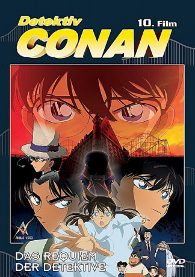

#6996 Detektiv Conan 10 - Das Requiem der Detektive
 
 IMDB-Wertung: 7.2 / 10
IMDB-Wertung: 7.2 / 10  Metascore: 0
Metascore: 0 
Kogoro wird samt Ran und Detektive Boys ins „Miracle Land“ bestellt. Dort soll er einen geheimnissvollen Auftrag für einen noch geheimnissvolleren Auftraggeber lösen. Diesen abzulehnen ist natürlich Tabu, zumal sich die Kinder in der Gewalt des Auftraggebers befinden. Für Conan und Kogoro beginnt ein Wettlauf gegen die Zeit, bei welchem sich die beiden Schritt für Schritt an den Fall herantasten und auch so manchen alten Bekannten wiedersehen.
Jahr: 2006
Dauer: 110 Minuten
FSK: 12
Land: Japan Studio: Toho CompanyTonspuren:
Untertitel:
Auflösung: 720p (1280x720) Größe: 771 MB
Genre: Animation/Trick, Mystery
Regisseur: Yasuichirô Yamamoto
Drehbuch: Gosho Aoyama
Soundtrack:
Darsteller:
Datei: X:\Kinder Anime\Detektiv Conan\Detektiv Conan Filme\Detektiv Conan 10 - Das Requiem der Detektive (2006, FSK12, 1280x720).mp4 seit 15.09.2017
Festplatte: Kinder-Filme+Trick
 Es gibt insgesamt 23 Filme in der Gruppe 'Kinder Anime\Detektiv Conan\Detektiv Conan Filme'
Es gibt insgesamt 23 Filme in der Gruppe 'Kinder Anime\Detektiv Conan\Detektiv Conan Filme'